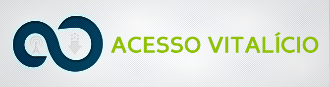
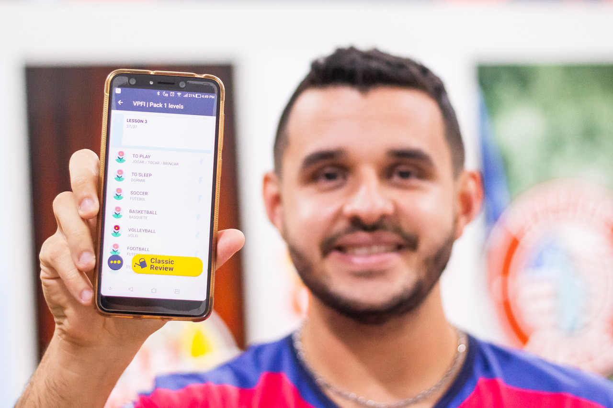
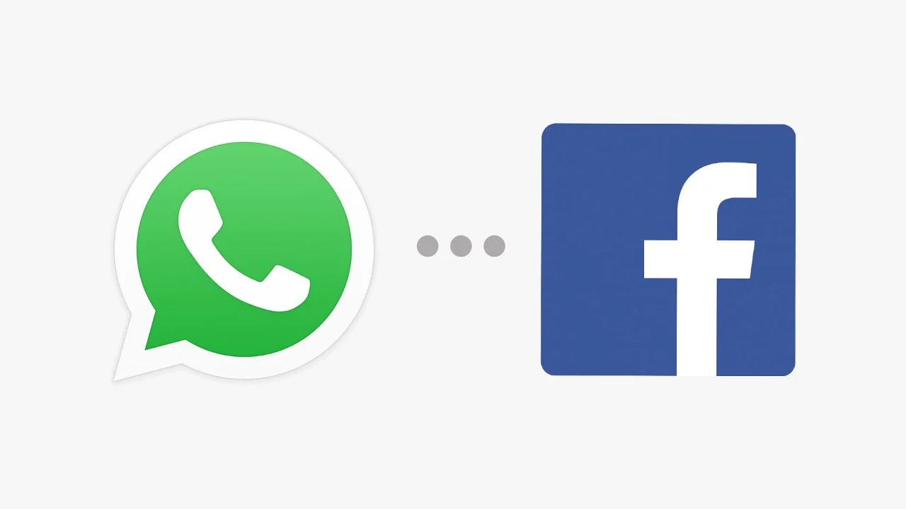
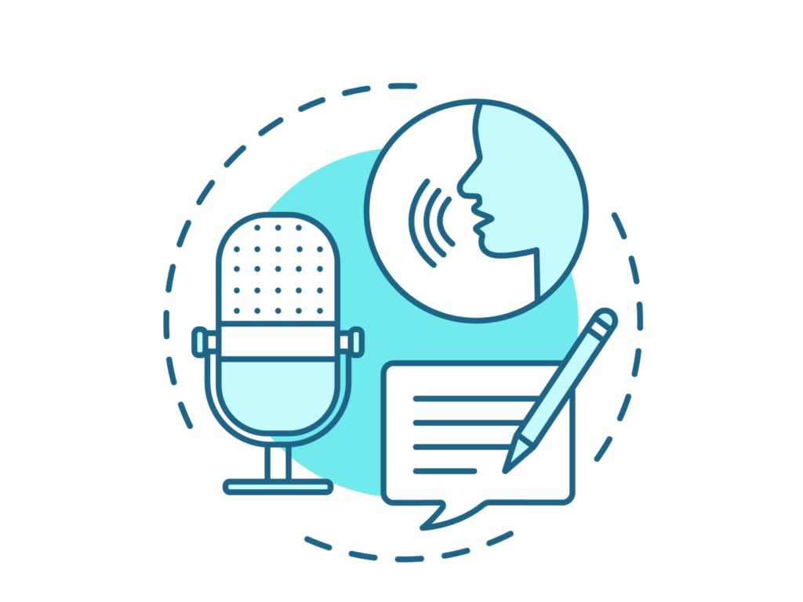
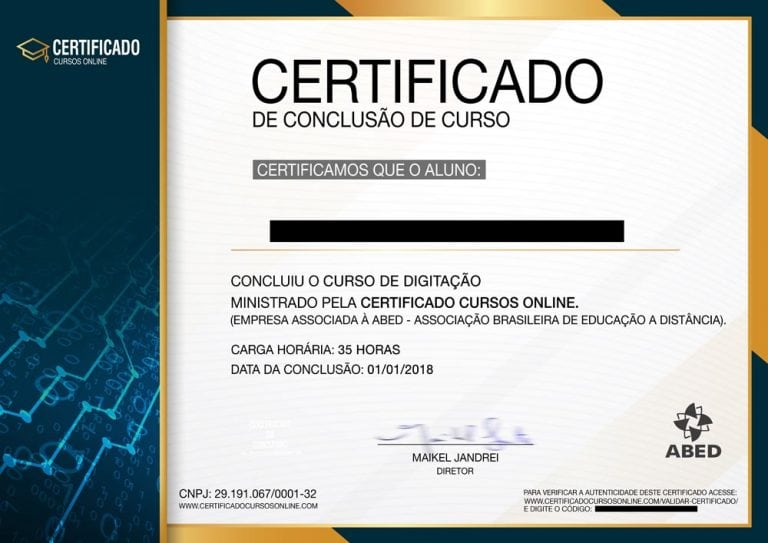

Você quer aumentar o seu salário ?
Conheça o método VPFI e aprenda o que só 5% da população Brasileira sabe, e ganhe até 72% mais.
De acordo com uma pesquisa da Catho, essa habilidade pode te fazer ganhar até 72% mais.
O que eu vou falar para você pode mudar sua vida para sempre, e te fazer ganhar até 72% mais do que as pessoas que não tem dominam a habilidade, que você precisa ter para ganhar mais.
Com certeza você quer ter um salário melhor do que o seu salário atual, …
…. e sonha em ser mais valorizado na empresa que você trabalha e também no mercado de trabalho para poder realizar os seus sonhos.
Você já teve sonhos que não foram realizados por falta de dinheiro, já tentou de tudo para conseguir realizá-los mas não conseguiu.
Se iludiu com cursos caros de faculdades, talvez até tentou vender alguma coisa para juntar um dinheiro a mais, ...
...mas não conseguiu os seus objetivos e até hoje você se sente frustrado.
O que você vai descobrir aqui, se for colocado em prática no seu trabalho quando você aprender vai te deixar com um salário até 72% maior.
Apenas 5% da população brasileira tem essa habilidade e eles conseguiram o que você quer, ganhar mais e realizar seus sonhos.
Existe um jeito de aumentar o seu salário, sem que você precise entrar em uma faculdade ou em outro curso caro.
Preste bastante atenção …
Você não vai precisar se preocupar mais se vai conseguir um novo emprego porque com essa habilidade, você vai conseguir um emprego rápido, onde te pagam bem.
Sabe o medo da pobreza que você tem ? Ele vai sumir, porque você consegue fazer uma coisa que muita gente não consegue e que muitas empresas valorizam muito porque é raro encontrar pessoas com essa habilidade..
O medo de não conseguir um emprego, ter um salário ruim e ter que sobreviver com um salário mínimo, praticamente não existiram mais na sua vida porque você vai está r confiante.
Porque você vai fazer parte de só 5% da população, e as empresas querem contratar essas pessoas para trabalhar para elas.
Você vai conseguir ter acesso às coisas que você sonhava e que antes não conseguia ter, porque ganhava um salário mínimo.
Imagina você entrando no supermercado, indo em direção da padaria e olhando aqueles doces deliciosos que eles fazem, morrendo de vontade de comer eles, mas quando chega na padaria.
Você olha o preço das coisas mas para você é caro, e tem que ficar só com a vontade de comer porque o dinheiro que você tem é contado e você não pode gastar nem um real a mais.
Porque tem que comprar a quantidade de comida certa, para não faltar na geladeira no final do mês.
Se não você passa fome ou não pode gastar mais do que o valor que você definiu no mercado, para não faltar dinheiro para pagar alguma conta importante como água, luz ou internet.
Você entendeu que isso é sério né, e que te faz muito mal ?
Você não precisa passar por esse medo, pelo medo da pobreza ! Porque você pode está r entre os 5% da população, que as empresas valorizam!
E esses 5% são os que ganham até 72% mais, e não precisa ficar com medo da pobreza!
Existe o método VPFI que vai te ensinar essa habilidade, e você não vai mais precisar sentir medo de ir em lugares como o supermercado e passar vontade de comprar as coisas que você quer !
Enquanto todo mundo está pensando em se formar na faculdade, fazer uma pós graduação ou um doutorado para ganhar mais.
Outras encontraram um jeito mais barato, rápido e garantido que levaram elas, a ganhar até 72% mais.
Eles descobriram que com o Inglês eles conseguem se destá car no mercado de trabalho.
E terem melhores salários.
Decidiram dedicar seu tempo para aprender inglês.
Essas pessoas perceberam que com o Inglês eles conseguem ganhar muito mais do que o normal e terem uma vida melhor.
E hoje as empresas querem eles para trabalhar para eles e pagam bem mais que a média.
Conheça quem pode te ajudar !
Eduardo Souto
“Sou o fundador da escola VPFI (Você pode falar inglês) e professor de inglês desde 2010, fui professor em escolas particulares e também em empresas.
Dou aula para todas as idades desde crianças de 5 anos até idosos”
Ruan Barbin
“Eu sou o Teacher Ruan, estou em todos os projetos da VPFI, nos Podcasts, no canal do Youtube, no desenvolvimento do Aplicativo de memorização e mais um pouco.
Comecei como aluno mas como eu fui muito esforçado, consegui ser professor e com o professor Eduardo eu vou ensinar Inglês para você.”
Confira os módulos do nosso curso !
Módulo 1
- INTRODUÇÃO
- COMO FAZER OS MÓDULOS DE PRÁTICA.
- VOCABULARY 1
- EXPRESSIONS 1
- STEP 2 - INTRODUÇÃO A GRAMÁTICA
- AULA GRAMATICAL 1
- GRAMMAR 1
- STEP 3 - INTRODUÇÃO AO LISTENING
- LISTENING EXERCISE 1
- CORREÇÃO DO LISTENING
- ENCERRAMENTO 1
Módulo 2
- O QUE EU VOU APRENDER NA LESSON 2
- AULA TEÓRICA 2
- VERBS 2
- VOCABULARY 2
- EXPRESSIONS 2
- AULA GRAMATICAL 2
- GRAMMAR 2
- LISTENING EXERCISE 2
- CORREÇÃO DO LISTENING 2
- ENCERRAMENTO 2
Módulo 3
- O QUE EU VOU APRENDER NA LESSON 3
- AULA TEÓRICA 3
- VERBS 3
- VOCABULARY 3
- EXPRESSIONS 3
- AULA GRAMATICAL 3
- GRAMMAR 3
- LISTENING EXERCISE 3
- CORREÇÃO DO LISTENING 3
- ENCERRAMENTO 3
Módulo 4
- SPECIAL CLASS 1 (VÍDEO)
Módulo 5
- INTRODUÇÃO: INTERACTION CLASS
- USE YOUR VOCABULARY 4
- LIVING THE LANGUAGE 4
- ORAL PRACTICE 4
- IMPROVING YOUR CAPACITY 4 pt. 1
- BE NEGATIVE 4
- IMPROVING YOUR CAPACITY 4 pt. 2
- BE AFFIRMATIVE 4
- LISTENING 4
- CORREÇÃO DO LISTENING 4
- ENCERRAMENTO 4
Módulo 6
- O QUE EU VOU APRENDER NA LESSON 5
- AULA TEÓRICA 5
- AULA GRAMATICAL 5
- VERBS 5
- VOCABULARY 5
- EXPRESSIONS 5
- GRAMMAR 5
- LISTENING EXERCISE 5
- CORREÇÃO DO LISTENING 5
- ENCERRAMENTO 5
Módulo 7
- USE YOUR VOCABULARY 6
- LIVING THE LANGUAGE 6
- ANSWER THE QUESTIONS 6
- IMPROVING YOUR CAPACITY 6 pt. 1
- BE NEGATIVE 6
- IMPROVING YOUR CAPACITY 6 pt. 2
- BE AFFIRMATIVE 6
- LISTENING 6
- CORREÇÃO DO LISTENING 6
- ENCERRAMENTO 6
Módulo 8
- O SOM PERFEITO DO TH NO INGLÊS
Módulo 9
- IMPORTANT WORDS TO REMEMBER 1
- PRÁTICA ORAL DE CONTEÚDO 1
- ANSWER THE QUESTIONS 1
Módulo 10
- EXPLICAÇÕES SOBRE O TESTE
- TEST
“Tem mais alguma coisa que eu preciso saber ?”
Sim !!!
DOIS PROFESSORES
Dois professores para ensinar você no mesmo curso você só encontra aqui.
Dois professores para te ensinar e tirar sua dúvidas, aqui você consegue aprender com dois professores diferentes e ainda pode tirar as suas dúvidas.
ACESSO VITALÍCIO
O que os concorrentes cobram de você todo mês, não existe aqui !
Sabe o que isso quer dizer, que você só paga uma vez, e nunca mais se preocupa com a mensalidade do curso, nunca mais vai pagar um centavo para estudar inglês.
CONTEÚDO NOVO TODOS OS DIAS DA SEMANA
Conteúdo novo todo dia nossos concorrentes não entregam para você.
Todos os dias da semana você vai receber um conteúdo novo, para aprender mais e melhorar o seu inglês.

AULA AO VIVO TODA SEMANA
Você pode participar das nossas aulas ao vivo toda semana, praticar os exercícios que os professores escolheram, na mesma sala que os outros alunos, tirar suas dúvidas e aprender mais.
APLICATIVO DE MEMORIZAÇÃO
Com esse aplicativo você pode praticar, melhorar o seu inglês, por que vai lembrar com mais facilidade o que aprendeu nas aulas, e não vai se enrolar quando for conversar ou escrever.
GRUPO DE ALUNOS
Facebook e WhatsApp
Com os nossos grupos no Facebook e no WhatsApp, você conhece novas pessoas, pratica o seu inglês com eles e melhora todo dia.
COMUNIDADE DE CONVERSAÇÃO
Você pratica com os outros alunos e melhora o jeito de falar, escrever e ficar melhor todo dia.
MAIS DE 230 ATIVIDADES EXTRAS
Você vai aprender ainda mais com as nossas atividades extras no Telegram, e são muitas, você pode procurar algo específico que tenha dúvida ou que queira entender melhor e tirar suas dúvidas.
BIBLIOTECA BILÍNGUE ONLINE
Com a nossa biblioteca você pratica a sua leitura, e melhora o seu inglês, assim você pode ler livros e ter acesso a conteúdo que não é traduzido para o nosso idioma.

MATERIAL PDF
Você estuda inglês até sem internet, onde quiser e sem pagar mais nada por isso.
VÍDEOS, ÁUDIOS E TEXTOS
Áudios, vídeos e textos para você praticar seu inglês do jeito que você quiser.
E você ainda recebe o …
CERTIFICADO DE CONCLUSÃO
Isso quer dizer que você pode provar que estudou inglês em uma entrevista de emprego, porque vai ter o nosso certificado assinado pelo nosso diretor. O seu certificado vai ser como o que está embaixo dessa frase.
Veja o que os nossos alunos falam sobre o nosso curso !
.jpg)
.jpg)
.jpg)
O que você vai receber quando comprar !
Você vai receber acesso imediato ao curso PACK ONE (Curso de Inglês Online VPFI), vai receber aulas de inglês organizadas e que são fáceis para aprender o que é ensinado.
Para você aprender da forma certa, não se perder no meio dos estudos e aprender com a maior facilidade possível.
Você aprenderá como escrever, falar e conversar para ficar preparado para conversar com alguém.
Quando você for falar inglês com alguém, você vai ficar surpreso, porque vai perceber que consegue entender, falar e escrever.
O medo de não conseguir passar em uma entrevista que exige inglês vai passar porque você sabe o que está fazendo e você vai conseguir um salário melhor para você.
Quem estiver concorrendo com você por uma vaga, vai ficar comendo poeira porque você vai está r bem mais qualificado que eles nas entrevistas.
Para quem não é esse curso ?
Para quem é preguiçoso e pensa que é só estudando algumas vezes ja vai aprender inglês. Veja bem, você precisa se dedicar aos estudos, e praticar para aprender.
Nós dedicamos tempo e esforço para aprender inglês e não vai ser diferente com ninguém.
Não prometemos milagres, se você quer aprender inglês de verdade vai ter que estudar e se esforçar.
Para quem é esse curso ?
Para quem quer se destá car no mercado de trabalho e ganhar mais, para pessoas que querem estudar de verdade e sair do salário mínimo, e parar de passar dificuldades com as contas.
Se você quer se esforçar para chegar onde quer, está no lugar certo.
Nós vamos ajudar você a chegar lá !
Depois de ler tudo isso, e entender tudo que vai receber no curso !
Quanto você acha que nós deveríamos cobrar por um curso assim ?
- Onde você tem dois professores !
- Onde você tem acesso vitalício !
- Onde você tem um aplicativo para estudar !
- Onde você tem uma biblioteca !
- Onde você tem aula ao vivo toda semana !
- Onde você tem grupos de alunos para praticar com seus colegas !
- Onde você tem atividades novas todos os dias !
- você tem mais de 230 de atividades no telegram !
Quanto você cobraria se você fosse o dono ?
Você entendeu que …
Se o preço fosse R$ 500, ainda estaria barato ?
Nossa ideia é ter muitos alunos, crescer nossa escola, entregar material de qualidade para os alunos.
E mesmo que ...
os cursos dos nossos concorrentes famosos custam R$ 1020,00 por ano.
O que você vai pagar não vai chegar nem perto disso.
Se você decidir comprar hoje o nosso curso de inglês PACK ONE (Curso de Inglês Online VPFI).
O único investimento que você vai fazer é de
79,90
Isso é menos que o preço de três pizzas.
Se você fizer as contas você paga 2,66 por dia.
E você não vai pagar um centavo a mais por esse curso...
… mas é inevitável que o preço do curso vai subir em algum momento, e passe a ser no formato de mensalidade.
Mas se você comprar agora vai continuar com ele para sempre aconteça o que acontecer !
Não esqueça que o preço pode aumentar a qualquer momento !
Nós deixamos você testar o curso !
Se você está com dúvidas se este curso é o ideal para você. Pode fazer sua inscrição e colocar o que nós dissemos para você a prova.
Você tem 7 dias para testar, ou você fica satisfeito com o nosso conteúdo, ou você recebe o seu dinheiro de volta !
É só mandar um email para VPIF@VPIF.COM que nós enviamos cada centavo do seu dinheiro de volta, sem mágoas nem nada disso.
Eu conheço pessoas que tiveram chances e poderiam ter uma vida melhor, evitar perrengues, mas que continuaram com a mesma vida.
Elas não querem aprender nada novo, querem ficar na zona de conforto e não mudam nada na vida delas.
Eu estou te dizendo isso porque se você escolher ficar como está agora com os mesmos hábitos não vai dar para mudar nada na sua vida !
O primeiro passo para mudar a sua vida é garantir a sua vaga no curso PACK ONE (Curso de Inglês Online VPFI).
Novas ações vão levar você a novos resultados. Se você não decidir mudar agora vai continuar com os mesmos resultados!
FAQ:
Funciona mesmo ?
Olha o depoimentos dos nossos alunos
Funciona para mim ?
Se você não souber inglês funciona sim, e se quiser pode testar nosso curso de quiser !
Alguém já usou ? Tem fotos ou depoimentos reais ?
Sim, temos depoimentos de vários alunos que já compraram o nosso curso, ali em cima na parte de depoimentos !
Tem garantia ?
Sim, você tem 7 dias de garantia !
Se o produto não funcionar vocês devolvem meu dinheiro ?
Sim, você pode pedir seu dinheiro em até 7 dias !
O site do produto é confiável ?
É sim, nosso site é confiável e a compra é 100% segura.
Empresa registrada CNPJ: XX.XXX.XXX/XXX-XX
Já comprei muitos produtos na internet e cai num golpe.
Nossos alunos satisfeitos provam que o VPFI é um curso de verdade e não queremos tomar seu dinheiro. Veja os depoimentos dos nossos alunos.
Já tentei/usei de tudo e nada funciona para mim !
Os resultados variam de aluno para aluno, mas você não vai saber como vai se sair se não testar !
Tenho medo de comprar e não receber o produto.
Sua compra é totalmente segura, ela é processada pela Hotmart e você recebe seu acesso no seu email quando a compra for confirmada !
Porque eu preciso disso ?
Porque sem inglês você não tem acesso ao conhecimento antes das outras pessoas !
Porque eu preciso disso agora ?
Porque depois pode ser tarde demais e você vai perder dinheiro e passar por perrengues
Será que isso é pra mim ?
Se você estiver disposto a estudar pelo menos 5 minutos por dia é para você sim
Quem é você pra me mostrar isso ?
Sou professor desde 2010
E se eu não gostar ?
Você tem 7 dias para testar nosso curso, se decidir parar você recebe seu dinheiro de volta.
Isso não dá certo !
Da uma olhada no que os nossos alunos dizem sobre nosso curso que você vai se convencer que isso dá certo !
Não confio no vendedor !
Você pode testar nosso curso por 7 dias, e ver que nós somos confiáveis !
Não tenho dinheiro pra isso !
Você pode parcelar nosso curso no cartão de crédito e pagar parcelas muito baixas
Porque nunca ouvi falar sobre isso ?
Porque nós lançamos esse curso a pouco tempo e não somos muito famosos.
Tenho que consultar alguém !
Tudo bem, mas mostra essa página para ela ok ?
Não vou ter tempo !
Você só precisa estudar um pouco por dia para aprender e estuda no horário que quiser